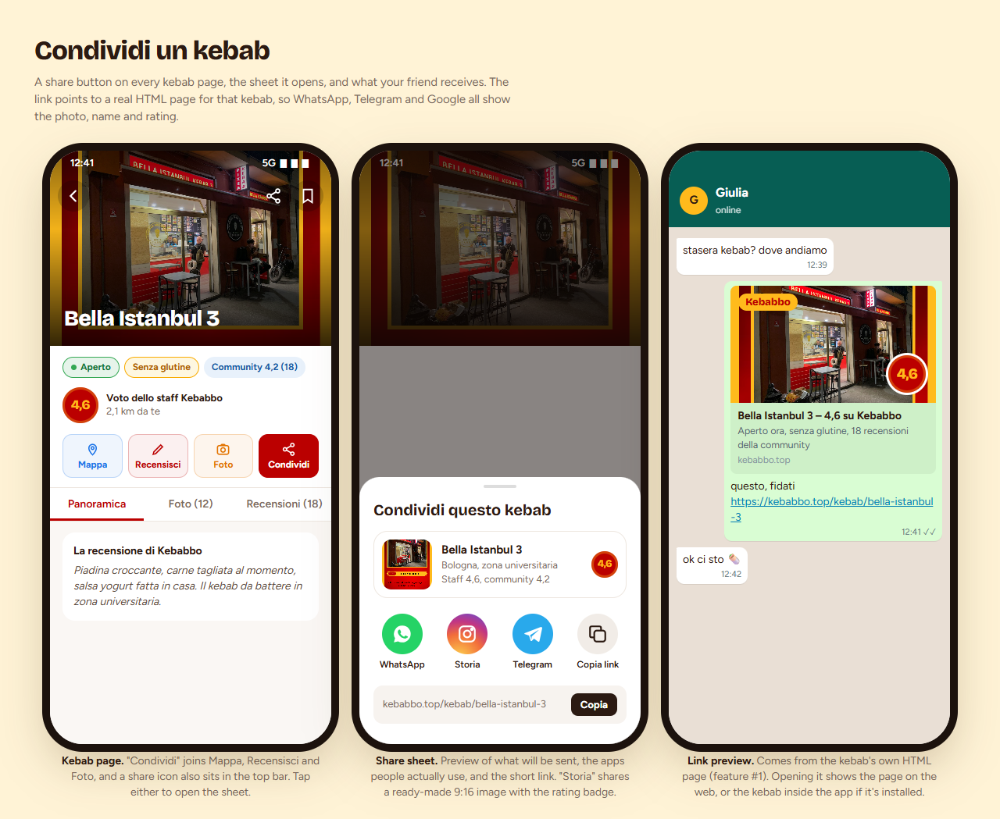
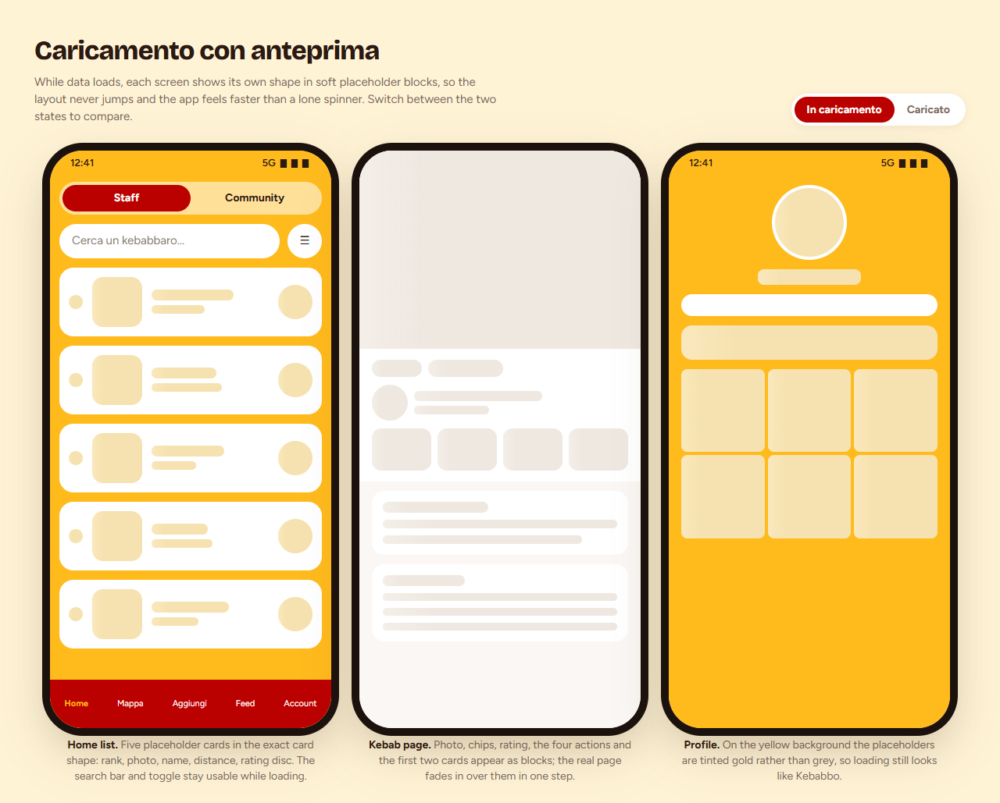
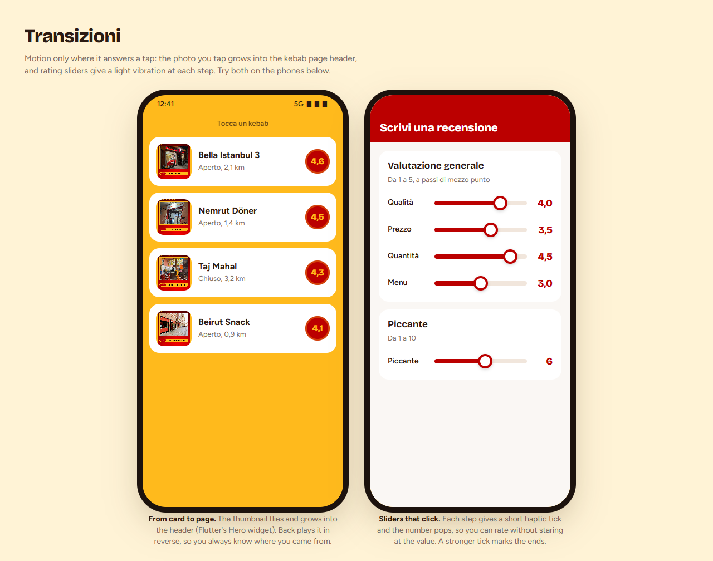
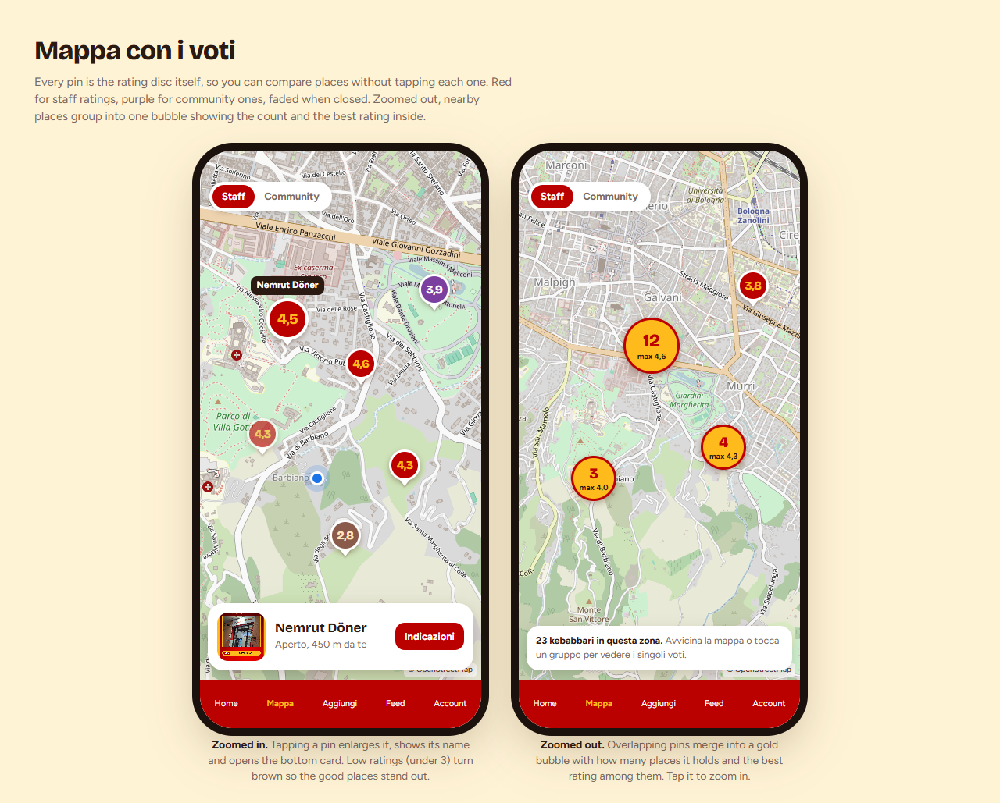
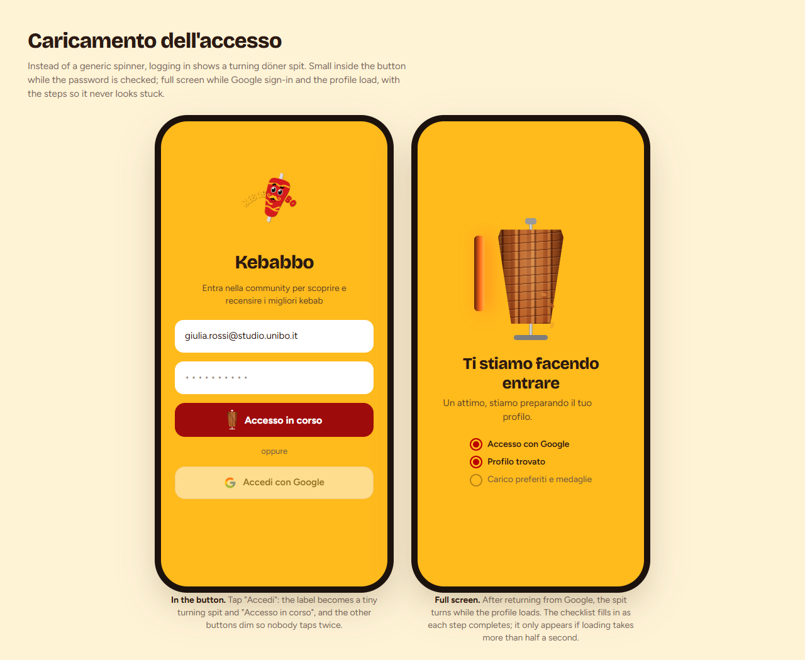

Mockup Kebabbo
Proposals to choose from before building them in the app. Same brand as today: red, saffron, white cards. The rating disc is the one element repeated everywhere. Each page opens with a double-click and works offline (map tiles and fonts need a connection).

Condividi un kebabShare button on the kebab page, the share sheet, and the link preview your friends see on WhatsApp.

Caricamento con anteprimaPlaceholder blocks in the shape of each screen instead of a spinner: home list, kebab page, profile.

TransizioniThe tapped photo grows into the kebab page; rating sliders tick with a light vibration. Interactive.

Mappa con i votiPins that are the rating itself, colored by staff, community, closed or low, and grouped when zoomed out.

Caricamento dell'accessoA turning döner spit: tiny inside the login button, full screen with progress steps after Google sign-in.